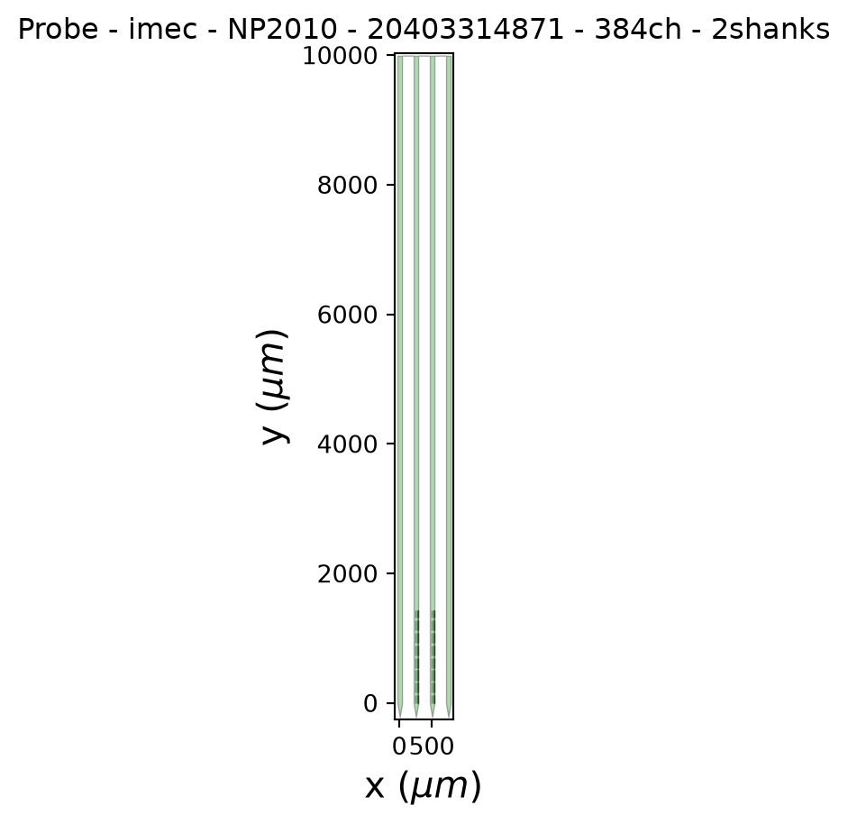
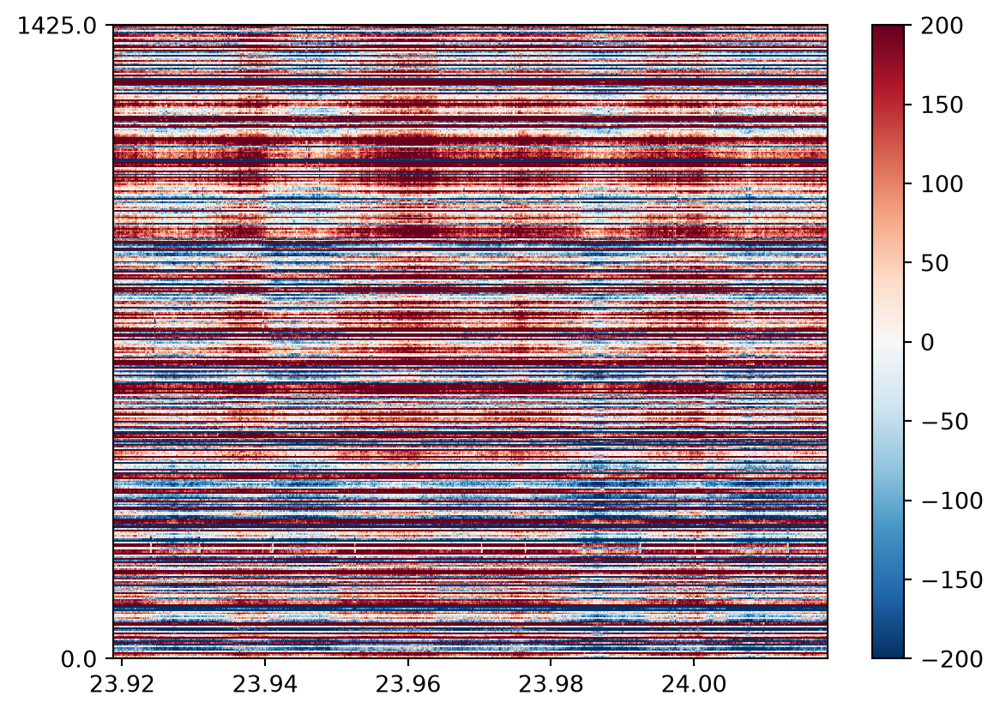
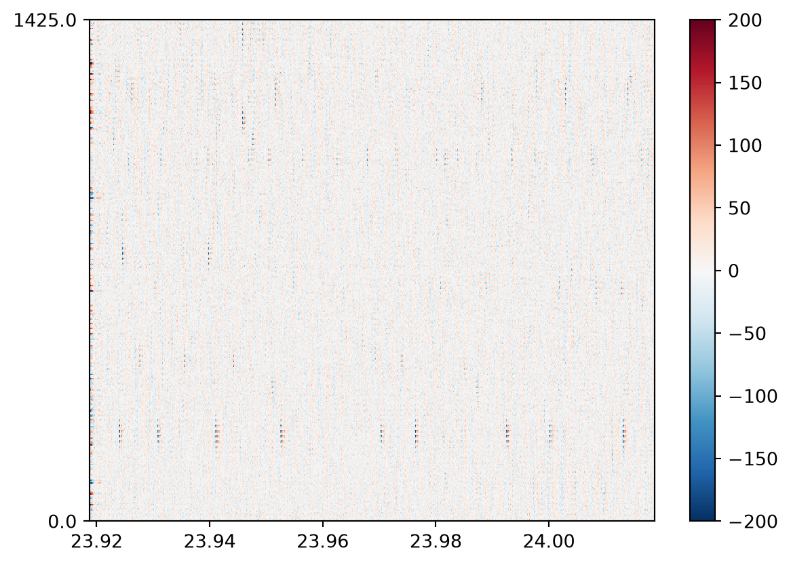
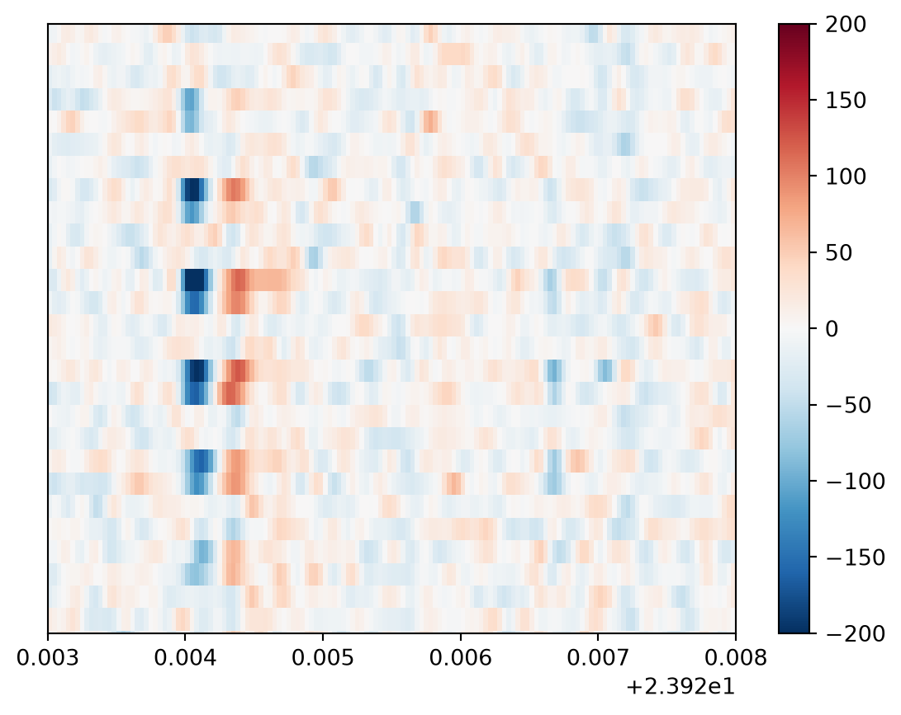
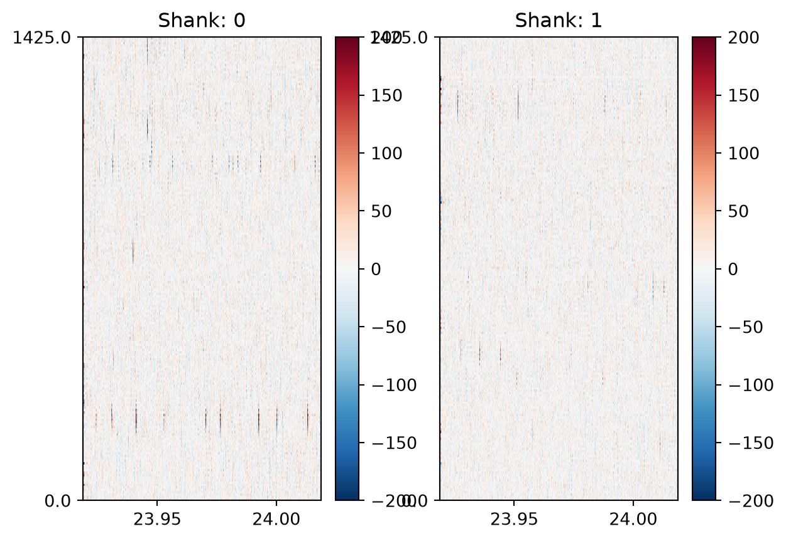
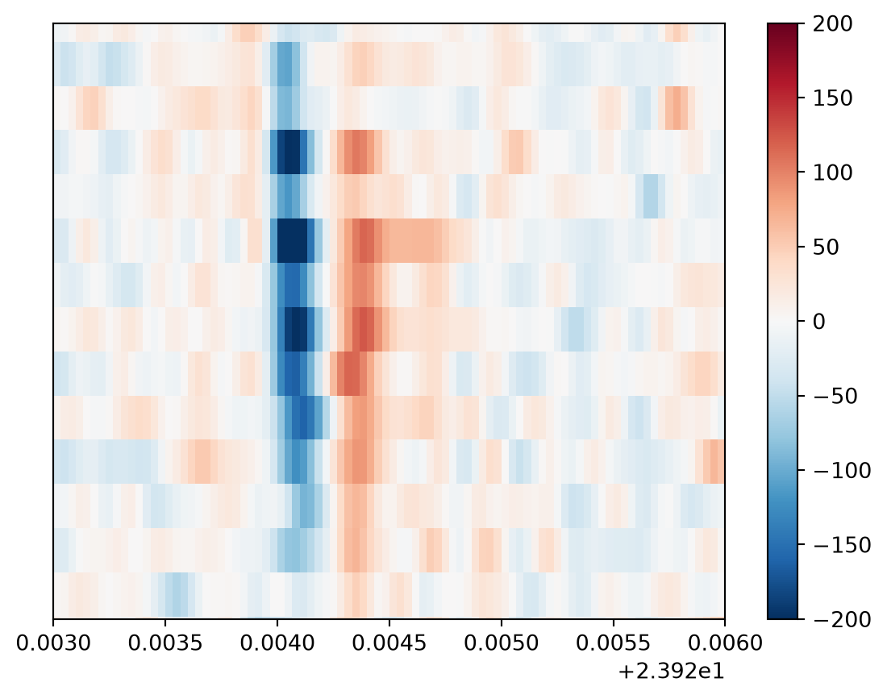

from pathlib import Path
import matplotlib.pyplot as plt
import spikeinterface.full as si
from probeinterface.plotting import plot_probe
from spikeinterface_gui import run_mainwindow3 Pipeline overview (coding)
In this chapter we will use SpikeInterface to implement a standard spike sorting pipeline from start to finish. We will go through the key steps at a high level, while developing the theory and adding more advanced methods in the following chapters.
We will load and preprocess the data, run spike sorting and compute quality metrics for assessing the sorting output. Let’s get started!
3.1 Data Loading and Exploration
3.1.1 Python imports
First, let’s import all of the packages we will need to run the pipeline:
3.1.2 Data Loading
We will use a short example dataset available on the course data Zenodo. Download the files: sub-001_ses-001_g0_t0.imec0.ap.bin and sub-001_ses-001_g0_t0.imec0.ap.meta and put them in a folder. In the code below, we assume the files are in the folder data/pipeline-overview.
First, we will load the data with SpikeInterface.
SpikeInterface can load data from many different acquisition systems, using functions within its extractors module. As our data was recorded in SpikeGLX, we will use the read_spikeglx() method:
# This should be the path to the folder containing
# the data (.bin and .meta files linked above).
# On Windows, you may need to prepend
# r to the string e.g. r"C:\my\path"
path_to_data_folder = "data/pipeline-overview"
recording = si.read_spikeglx(
path_to_data_folder,
stream_id="imec0.ap"
)
print(recording)SpikeGLXRecordingExtractor: 384 channels - 30.0kHz - 1 segments - 75,000 samples - 2.50s
int16 dtype - 54.93 MiBWe need to tell SpikeInterface where the data is on our machine, and what data stream we want to load. If you are unsure of the stream, run the function without the stream_id argument and SpikeInterface will prompt you with the available streams.
Because we want to load the AP data stream for spike sorting, we pass "imec0.ap".
Note
SpikeInterface uses ‘lazy loading’, which means at this stage no data is actually loaded into memory. Data is only loaded when we request it (e.g. for visualization, or spike sorting). This makes operations very fast.
3.1.3 The Recording object
SpikeInterface extractor functions return the recording as a Python object. This object has many useful methods for exploring the recording as well as accessing the underlying data, such as get_traces().
Many objects in SpikeInterface are recording-objects that inherit from a BaseRecording class. This means that they all inherit the relevant attributes and methods useful to help us explore the recording, which we can see on the BaseRecording documentation. See inheritance for more details.
You can also use Python’s dir() function to see all attributes and methods associated with any Python object.
print(
[method for method in dir(recording) if method.startswith("get")]
)['get_annotation', 'get_annotation_keys', 'get_binary_description', 'get_channel_gains', 'get_channel_groups', 'get_channel_ids', 'get_channel_locations', 'get_channel_offsets', 'get_channel_property', 'get_dtype', 'get_duration', 'get_end_time', 'get_memory_size', 'get_neo_io_reader', 'get_num_blocks', 'get_num_channels', 'get_num_frames', 'get_num_samples', 'get_num_segments', 'get_parent', 'get_preferred_mp_context', 'get_probe', 'get_probegroup', 'get_probes', 'get_property', 'get_property_keys', 'get_sampling_frequency', 'get_start_time', 'get_streams', 'get_time_info', 'get_times', 'get_total_duration', 'get_total_memory_size', 'get_total_samples', 'get_traces']
TipThings to try
This is a good time to explore the recording object using the API docs. Have a go at the following:
- Run the
read_spikeglxfunction without stream_id to see what streams are on the recording. - Print the locations of all channels on the probe.
- Print the time vector associated with the recording.
- Use
get_traces()to retrieve a segment of raw data as a NumPy array. What are its dimensions? - Look through the results of the
dir()call above. Try out any functions that look interesting!
3.1.4 Visualizing the probe
There are many brands of recording probes used in extracellular electrophysiology (e.g. Neuropixels, Cambridge Neurotech or NeuroNexus ) which makes loading probes into a common framework complex.
Under the hood, SpikeInterface uses the ProbeInterface package to load many different types of probe. In our case, it automatically identifies and loads the Neuropixels 2 (NP2) probe.
It is important to check that the probe has loaded as expected, and that the geometry matches how it was set up in your acquisition software. We can plot the probe to confirm it loaded correctly:
probe = recording.get_probe()
plot_probe(probe)
plt.show()
As expected, we have a 4-shank Neuropixels probe in which all the recording channels are located in the middle two shanks.
3.1.5 Visualizing the data
Electrophysiological recordings are susceptible to contamination from multiple noise sources: electrical interference, mechanical noise caused by probe movement, and artifacts arising from hardware defects such as broken or noisy recording electrodes.
As such, it is important to visualize the data, especially after preprocessing, to check the data quality. First, let’s plot 0.1 seconds of data from our raw recording:
start_time = recording.get_times()[0]
si.plot_traces(
recording,
time_range=(start_time, start_time + 0.1),
return_in_uV=True,
order_channel_by_depth=True
)
plt.show()
This plot is a heatmap view of the data: time in seconds is on the x-axis, and each row of the y-axis is the data from a separate recording channel (ordered by depth). The color of the pixel indicates the voltage on that recording channel at that timepoint.
return_in_uV to ensure the data is returned in microvolts, as by default most electrophysiological recordings are stored as unitless int16 values.
order_channel_by_depth is used as, depending on the probe, the default ordering of channels is not always by depth, meaning the order may be scrambled on the plot.
TipTip
In general when working with raw data, you can use recording.get_channel_locations() to inspect the default channel ordering of the channels, and order_channels_by_depth() function can be used to get the indices for reordering.
Our signals of interest are action potentials recorded on the probe, however, we cannot see any in the raw data! This is primarily due to electrical noise. We will need to preprocess the recording to reduce the noise and isolate our signal of interest.
3.2 Preprocessing
Below, we will apply three preprocessing steps to help isolate our signal of interest (action potentials) from noise:
phase_shift : corrects a hardware artifact in the Neuropixels probe which causes small shifts in time across nearby channels.
bandpass_filter : removes high and low frequency oscillations from the data. It is applied to each channel separately, across all time points.
common_reference : removes noise that appears as vertical stripes across the data. It is applied to each timepoint separately, across all channels.
To preprocess the data, we will pass our recording object into functions that return a new, preprocessed recording object. e.g. filtered_recording = bandpass_filter(recording). We can do this for every step in the preprocessing chain:
phase_shift_recording = si.phase_shift(recording)
filtered_recording = si.bandpass_filter(
phase_shift_recording, freq_min=300, freq_max=6000
)
cmr_recording = si.common_reference(
filtered_recording, operator="median"
)
print(phase_shift_recording)
print(filtered_recording)
print(cmr_recording)PhaseShiftRecording: 384 channels - 30.0kHz - 1 segments - 75,000 samples - 2.50s - int16 dtype
54.93 MiB
BandpassFilterRecording: 384 channels - 30.0kHz - 1 segments - 75,000 samples - 2.50s
int16 dtype - 54.93 MiB
CommonReferenceRecording: 384 channels - 30.0kHz - 1 segments - 75,000 samples - 2.50s
int16 dtype - 54.93 MiBWe can see that each preprocessing function returns a new recording object which tracks the metadata of each preprocessing step. In SpikeInterface, the preprocessing functions return almost instantly due to the lazy loading mentioned earlier. When we apply the preprocessing function, we only really just change the metadata associated with the recording, the data is not actually changed at this stage.
Only when we get the data (e.g. with the plot_traces(), or get_traces() functions, or when saving the data) is the requested chunk of data actually loaded. This makes these operations very fast!
Now we are ready to plot the data:
si.plot_traces(
cmr_recording,
time_range=(start_time, start_time + 0.1),
return_in_uV=True,
order_channel_by_depth=True
)
plt.show()
As you can see, the signal is much cleaner and we can see action potential waveforms.
However, there seems to be a strange artifact, the small gaps across the action potential waveforms. We will investigate these in the next section.
3.2.1 Splitting the data by shank
You might notice the data in the above image looks strange. All spikes have predictable gaps along them, we can see this clearly if we zoom into a single waveform:
si.plot_traces(
cmr_recording,
time_range=(23.923, 23.928),
return_in_uV=True,
order_channel_by_depth=True,
)
ax = plt.gca()
ax.set_ylim(200, 300)
plt.show()
NoteClick to reveal the answer
Our recording channels are located on two shanks. However we have plotted all recording channels together. The channels on different shanks have the same y-position, so they are plotted next to each other, even though they have very different x-positions.
The shanks are too far apart for the same action potential to be recorded across both shanks. This means that the action potential recorded on one shank’s channels is interleaved with channels from the other shank on which no action potential is recorded.
We can solve this by splitting the recording by shank using the recording’s groups property.
When SpikeInterface loads the data, it will automatically assign different shanks to different groups. We can split by these groups, which will return a dictionary of two recordings (one for each channel group):
split_recording = cmr_recording.split_by("group")
print(split_recording){0: ChannelSliceRecording: 192 channels - 30.0kHz - 1 segments - 75,000 samples - 2.50s - int16 dtype
27.47 MiB, 1: ChannelSliceRecording: 192 channels - 30.0kHz - 1 segments - 75,000 samples - 2.50s - int16 dtype
27.47 MiB}
Warning
If SpikeInterface does not automatically load the groups from your probe, you can set them manually with the set_property() function (see here for an example).
Now we can plot the two shanks separately:
fig, ax = plt.subplots(1, 2)
for shank_idx, shank_recording in split_recording.items():
si.plot_traces(
shank_recording,
time_range=(start_time, start_time + 0.1),
return_in_uV=True,
order_channel_by_depth=True,
ax=ax[shank_idx]
)
ax[shank_idx].set_title(f"Shank: {shank_idx}")
plt.show()
si.plot_traces(
split_recording[0],
time_range=(23.923, 23.926),
return_in_uV=True,
order_channel_by_depth=True,
mode="map"
)
ax = plt.gca()
ax.set_ylim(200, 300)
plt.show()
Much better!
Now we have our preprocessed data, and have visually confirmed the data quality is good, we are ready to perform spike sorting.
TipThings to try
- How does the data look using
medianvs.meanas theoperatorargument incommon_average()? - What happens if you set the bandpass filter minimum cutoff to zero? What frequencies are included now? Or set the maximum cutoff to 15000?
- Set
return_in_uV=Falsewhen plotting. Does the data look much different? What is the datatype now? Can you explain what has happened to the data? Use.get_traces()withreturn_in_uV=Falseandreturn_in_uV=Trueand inspect how the data type changes. - Save the data to disk with the Recording object’s
.save()method
stretch goal
- Perform spike detection (e.g. absolute threshold method) on the preprocessed data obtained with
get_traces()
3.3 Sorting
Now we are ready to move onto spike sorting. The goal of spike sorting is to take our preprocessed recording with clear action potentials, detect these action potentials, and sort them as coming from different neurons based on their waveform and position on the probe.
We can pass the recording to SpikeInterface’s run_sorter() function, which allows us to easily switch between different sorters. There are many possible spike sorters to choose from, today we will use Kilosort 4.
Kilosort 4 by default will perform similar preprocessing steps to those we have already applied (it does highpass filtering and common average referencing).
As such, we will skip these steps, as we have already run them in SpikeInterface (we cannot turn filtering off, so just set it to a very low cutoff).
It is generally easiest to sort each shank separately, and in this tutorial we will now sort the first shank of the recording:
output_folder = Path("kilosort4_output")
first_shank_recording = split_recording[0]
sorting = si.run_sorter(
"kilosort4",
first_shank_recording,
folder=output_folder,
remove_existing_folder=True,
do_CAR=False,
highpass_cutoff=0.1,
)
0%| | 0/2 [00:00<?, ?it/s]
50%|█████ | 1/2 [00:06<00:06, 6.70s/it]
100%|██████████| 2/2 [00:12<00:00, 6.33s/it]
100%|██████████| 2/2 [00:12<00:00, 6.38s/it]
0%| | 0/2 [00:00<?, ?it/s]
50%|█████ | 1/2 [00:06<00:06, 6.76s/it]
100%|██████████| 2/2 [00:12<00:00, 6.37s/it]
100%|██████████| 2/2 [00:12<00:00, 6.43s/it]
0%| | 0/1 [00:00<?, ?it/s]
100%|██████████| 1/1 [00:00<00:00, 44.52it/s]
100%|██████████| 1/1 [00:00<00:00, 42.45it/s]
0%| | 0/2 [00:00<?, ?it/s]
50%|█████ | 1/2 [00:00<00:00, 1.77it/s]
100%|██████████| 2/2 [00:01<00:00, 2.00it/s]
100%|██████████| 2/2 [00:01<00:00, 1.96it/s]
0%| | 0/1 [00:00<?, ?it/s]
100%|██████████| 1/1 [00:00<00:00, 88.15it/s]
100%|██████████| 1/1 [00:00<00:00, 84.19it/s]The sorting output is written to disk. The output contains all of the output files of the sorter, and its organization is sorter-dependent. As well as spike times and unit assignments, it contains other outputs from the sorter e.g. representative waveforms for each unit (‘templates’).
In SpikeInterface, we can access the spike times and unit assignments in a sorter-independent manner, using the sorting object:
print(sorting)KiloSortSortingExtractor: 40 units - 1 segments - 30.0kHzFor example, to get the spike times and unit assignments:
spikes = sorting.to_spike_vector()
spike_times = spikes["sample_index"] / sorting.get_sampling_frequency()
# show the first 5 spikes
print(
f"`spikes` is a structured numpy array with fields: {spikes.dtype.names}\n"
)
print(
f"First 5 spike times (s): {spike_times[:5]}\n"
)
print(
f"First 5 unit assignments: {spikes['unit_index'][:5]}"
)`spikes` is a structured numpy array with fields: ('sample_index', 'unit_index', 'segment_index')
First 5 spike times (s): [6.66666667e-05 6.66666667e-05 1.00000000e-04 1.00000000e-04
1.33333333e-04]
First 5 unit assignments: [ 3 11 7 19 39]
TipThings to try
- Get a list of all non-empty unit ids
- Remove a unit - what happens to the spikes assigned to this unit?
- Get the spike times for a specific unit
3.4 Postprocessing
Spike sorting is a complex task undertaken in the presence of significant noise. Therefore, many units will not cleanly represent a single neuron. As well as “good” units (where each spike is from the same neuron) units may be “noise” (i.e. its spikes are not real action potentials) or consist of multi-unit activity, “mua” (the unit includes spikes from multiple neurons).
To determine whether units are good or not, we must look at the individual spikes that belong to a unit and compute features associated with them. The various features we compute can help us tell if the unit is good, noise or multi-unit activity.
There are many features that can be computed and we will go into these in detail in the following chapters. For now we will explore the way in which these features can be computed in SpikeInterface, with the SortingAnalyzer.
3.4.1 Creating a SortingAnalyzer
The SortingAnalyzer is the key object for postprocessing in SpikeInterface. We can create the SortingAnalyzer by passing the sorting output and preprocessed recording:
analyzer = si.create_sorting_analyzer(
sorting=sorting,
recording=first_shank_recording
)Using this sorting analyzer interface, we will compute all of the features needed to assess the quality of our sorting.
3.4.2 Computing extensions
Next, we will compute many features that are useful to assess the sorting quality, including randomly selecting and storing spike waveforms, their amplitudes, locations, creating templates, autocorrelograms and more.
We will explore these in detail in later chapters, however for now we will simply compute them and visualize the key ones in SpikeInterface-GUI.
First, let’s compute the relevant features we need on the SortingAnalyzer:
extensions_dict = {
'random_spikes': {},
'templates': {},
'waveforms': {},
'noise_levels': {},
'correlograms': {},
'spike_amplitudes': {},
'spike_locations': {},
'unit_locations': {},
'template_similarity': {},
}
analyzer.compute(extensions_dict)/opt/hostedtoolcache/Python/3.11.16/x64/lib/python3.11/site-packages/spikeinterface/postprocessing/localization_tools.py:341: RuntimeWarning: invalid value encountered in divide
com = np.sum(wf_data[:, np.newaxis] * local_contact_locations, axis=0) / np.sum(wf_data)
/opt/hostedtoolcache/Python/3.11.16/x64/lib/python3.11/site-packages/spikeinterface/postprocessing/localization_tools.py:367: UserWarning: scipy.optimize.least_squares error: Each lower bound must be strictly less than each upper bound.
warnings.warn(f"scipy.optimize.least_squares error: {e}")
/opt/hostedtoolcache/Python/3.11.16/x64/lib/python3.11/site-packages/spikeinterface/postprocessing/template_similarity.py:345: NumbaTypeSafetyWarning: unsafe cast from uint64 to int64. Precision may be lost.
overlapping_ids = overlapping_j_list[i]
Now our analyzer object holds the computed features, which we can visualize in the SpikeInterface-Gui.
Warning
Some sorters will output their own features (e.g. waveforms, templates, amplitudes etc.), for example, Kilosort has a templates.npy file containing the templates it generated during sorting.
These are not loaded by SpikeInterface. Instead, the sorting analyzer will always compute these features directly from the passed recording.
3.4.3 Visualizing the SortingAnalyzer
To start the GUI, run:
run_mainwindow(
analyzer
)and see this video for a GUI walkthrough.